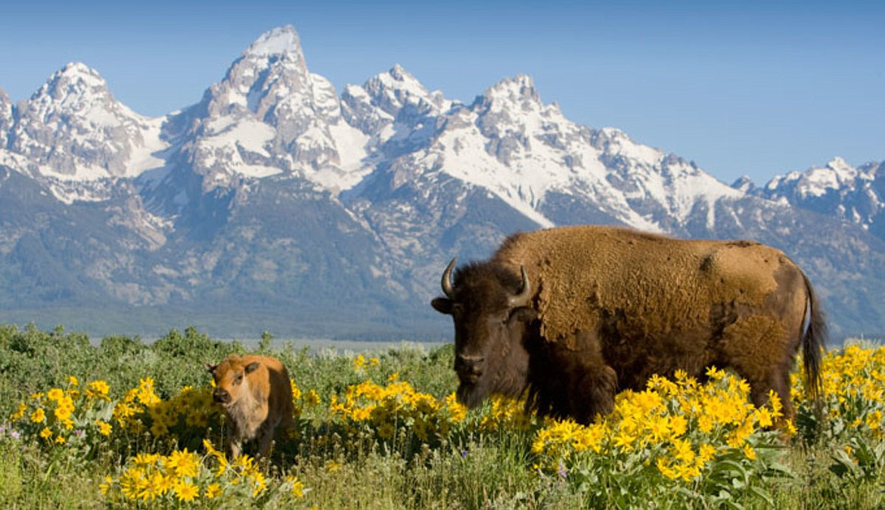

Yellowstone Trip Planner - 3-6 October 2024
Join WhatsApp Group

Trip Overview
Entry through south road from
Grand Teton
Visit
West Thumb Geyser Basin
and side of lake
Visit
Old Faithful
, Old Faithful Visitor Center
View timing of the Geysers to organize visits
Visit
Upper Geyser Basin
Visit
Grand Geyser
Visit
Morning Glory Pool
and
Riverside Geyser
Visit
Grand Prismatic Spring
, and maybe hike to Overlook (Nice view)
View
Fairy Falls Trail falls?
Imperial Geyser?
View
Norris Geyser Basin
and
Steamboat geyser
View
Mammoth Hot Springs
View Bisons at
Lamar River?
View
Grand Canyon of the Yellowstone
,
Brink of Lower Falls
and
Upper Falls
hike?
View
Hayden Valley
. Bisons?
Stay at
lake Cabins
last night? Eat by lake.
Drive back home through east entrance and by
Cody
Toggle Trip Map
Yellowstone Trip Map
Map showing the route and key locations in Yellowstone National Park
Toggle Map Links
Google Maps Links
1. West Thumb Geyser Basin
2. Old Faithful
3. Grand Geyser
4. Morning Glory Pool
5. Grand Prismatic Spring
6. Norris Geyser Basin
7. Mammoth Hot Springs
8. Lamar River
9. Grand Canyon of the Yellowstone
10. Hayden Valley